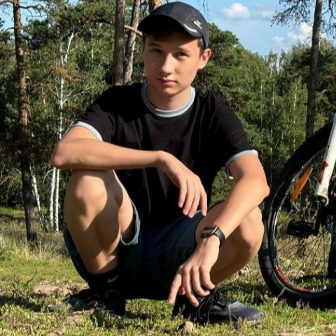
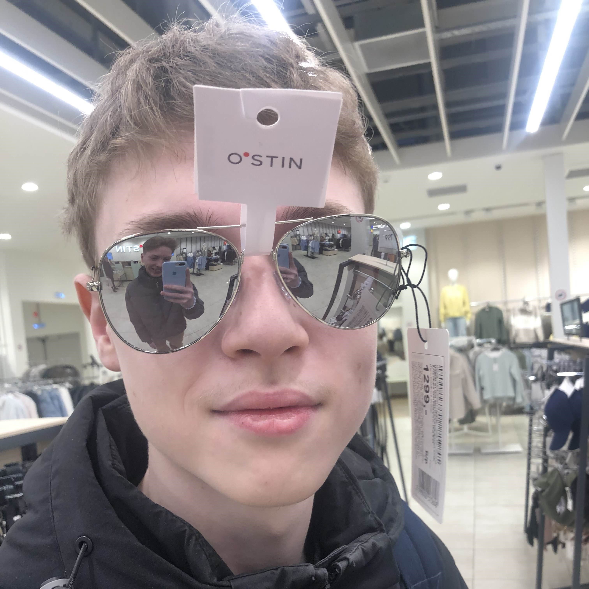
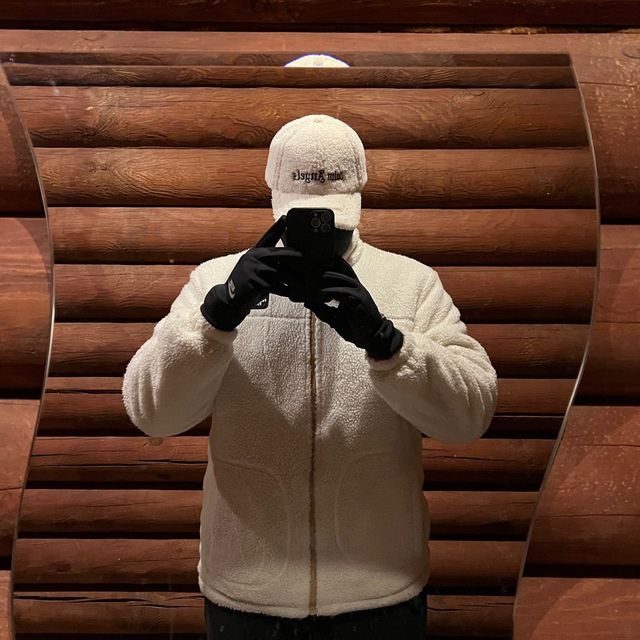
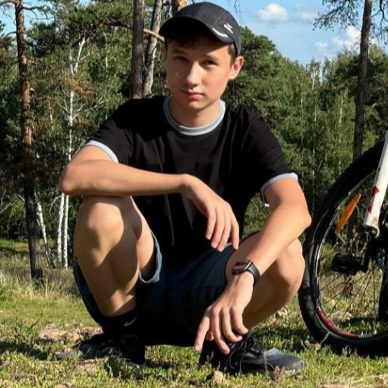
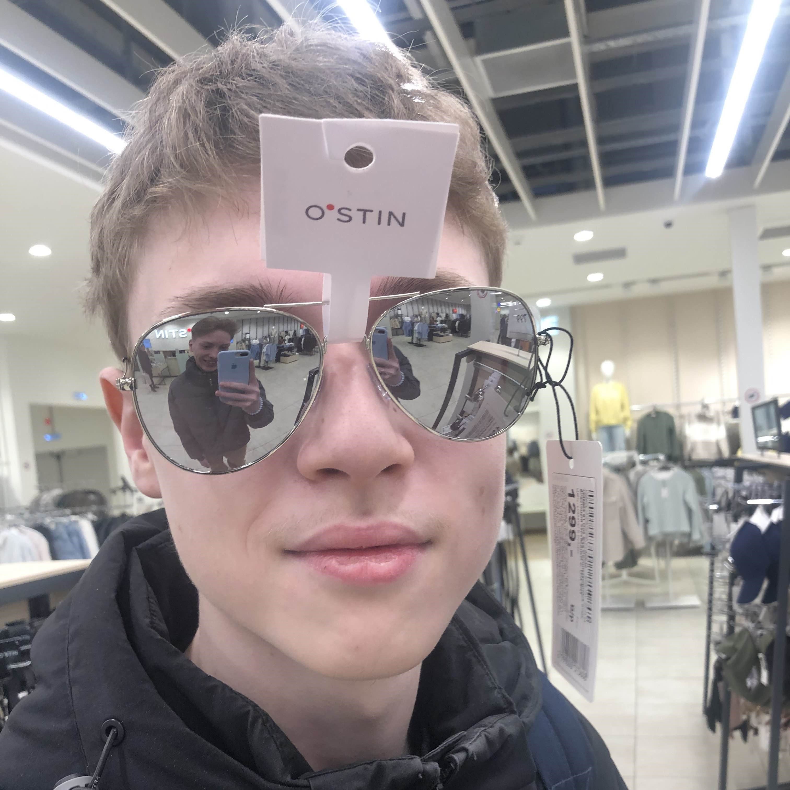
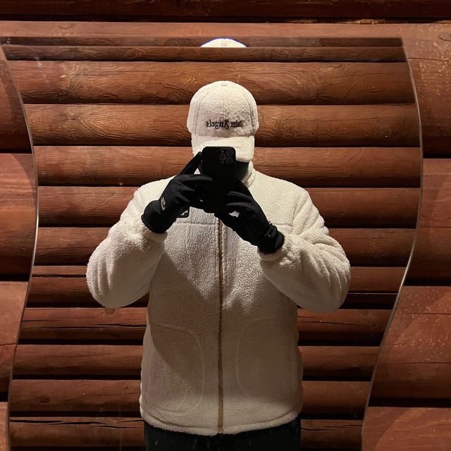
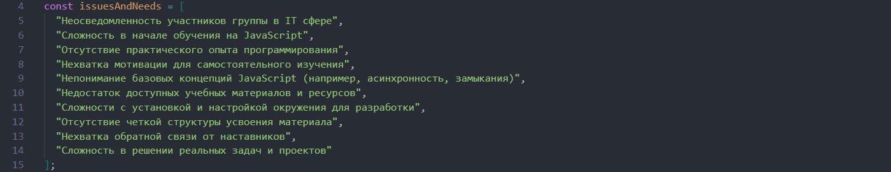
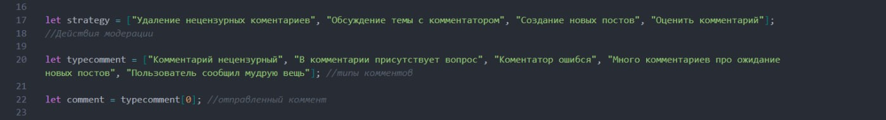
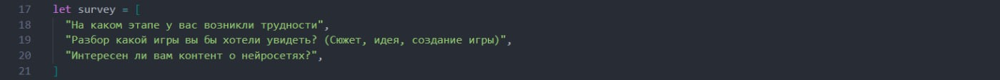

Первый проект СПО
ВНИМАНИЕ! Прежде чем вы увидите наш сайт знайте, он сделан ради получения дополнительных баллов :3
Работу выполнили студенты П-18:
 





Содержание:
1. Наша задача
3. Поиск группы
4. Информация и создание массивов
5. Определение проблем
6. Стратегия
7. Реализация идей
8. Получение обратной связи
Нашей задачей стала - оптимизация работы группы ВКонтакте
Цель задачи: улучшить взаимодействие членов группы в социальной сети ВКонтакте, а также облегчить управление группой администратору, используя знания по массивам и ветвлениям.
Шаги для выполнения задачи:
- Анализ текущего состояния: создайте массив с текущими характеристиками группы: количество фолловеров, типы публикуемого контента, частота публикаций и т.д.
- Определение проблем и потребностей: определите основные проблемы и потребности фолловеров группы, создав массив с возможными пунктами для улучшения.
- Разработка стратегии: сформулируйте стратегию развития группы, создав массив с действиями и инициативами, которые помогут решить выявленные проблемы.
- Реализация идей: используя ветвления (if-else), создайте алгоритм для администратора группы, позволяющий принимать решения в зависимости от различных ситуаций (например, модерация комментариев, выбор тем для обсуждения и т.д.).
- Получение обратной связи: предложите механизм для сбора обратной связи от фолловеров группы, разработав массив с вопросами для опроса или фокус-группы.
Так как у нас в команде было 5 участников, было совершенно очевидно и практично разделить задания между участниками и начать работу.
Этап 1 - Поиск группы
Для начала мы определили группу в VKонтакте, работу которой будем оптимизировать. Ею стала официальная группа IT-технологии МИДИС. Далее мы распределили обязанности и принялись за работу.
Этап 2 - Информация и создание массивов
Мы начали собирать нужную нам информацию об этой группе. После сбора информации мы получили следующие данные:
- Тип публикуемого контента - IT технологии, нейросети, игровая разработка
- Количество фолловеров - 1002
- Частота публикаций - каждые два дня
- Целевая аудитория - студенты и преподаватели
Проанализировав текущее состояние группы мы создали массив и занесли в него вышеперечисленную информацию.
Этап 3 - Определение проблем
Определив проблемы и потребности фолловеров мы сформулировали стратегию и создали массив с возможными пунктами для оптимизации, улучшения работы группы.
Этап 4 - Стратегия
Многие пользователи начали жаловаться на нецензурные комментарии, в связи с этим появилась большая нагрузка на администрацию и замедления их работы. Придумав действия и инициативы, которые должны помочь решить выявленные проблемы мы записали их в новый массив.
Этап 5 - Реализация идей
Используя ветвления (if-else), мы создали алкоритм для администратора группы, позволяющий принимать решения в модерации комментариев. Также мы создали массив с именами ошибок, которые могут возникнуть.
| Комментарий | Действие |
|---|---|
| "Нецензурный комментарий" | Удалить + блокировать фолловера |
| Ошибка в комментарии | Удалить |
| Фолловер сообщил мудрую вещь | Оценить |
| В комментарии присутствует вопрос | Ответить |
| Много комментариев про ожидание новых постов | Ответить + начать работу |
Этап 6 - Получение обратной связи
Для сбора обратной связи от участников группы, мы разработали массив с вопросами для опроса.
